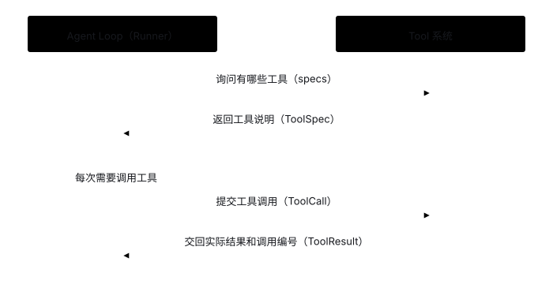
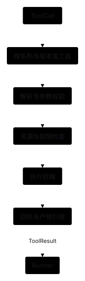

Tools: Execute Model-Requested Tool Calls
This chapter explains the core abstractions, inter-module collaboration, and extension options of the tool system; for concrete code integration see Stage 1, and for permission interception see Stage 2.
1. Starting Problem: How Does a Model Interact with the External Environment via Tools?
A large language model on its own can only accept text and output text—it cannot directly read local files or operate external systems. When a task needs access to external resources, the interaction flows as follows:
- User: "Check what files are in the workspace and read the notes."
- Model: First issues a
list_filestool call; after receiving the file list receipt, issues aread_file(path="notes.txt")call. - (System action: The tool system opens the file locally and packages the actual text content or error message into a receipt returned to Runner)
Two Core Internal Abstractions
- Tool Definition (
ToolDefinition): Binds a plain Python function to a tool name, description, argument validation model, and required permission (the model only sees the generated declaration schema and never touches the underlying Python function). - Tool Registry (
ToolRegistry): Manages all registered tools by name and, upon receiving a call, uniformly handles lookup, argument validation, action identification, Policy authorization, and function execution.
Black-Box Interaction Between the Tool System and Runner
Runner does not need to know how each tool is implemented internally; it interacts with the tool system exclusively through three standard data objects:

- Tool Declaration (
ToolSpec): Runner readstools.specsto obtain the tool name, usage description, and parameter JSON Schema for the model to read. - Call Request (
ToolCall): When the model proposes a call, Runner passes aToolCallcontaining the call ID, tool name, and raw argument string totools.execute(call). - Actual Receipt (
ToolResult): The tool system returns the execution result carrying the originalcall_id(including file contents, permission denial, or execution errors) so Runner can pair it back in the next model request.
2. Collaboration Boundaries with Related Modules
- Initialization-time configuration (Application → Tools): At startup, the application injects the tool definition list, workspace directory
workspace, and permission rulesPolicyintoToolRegistry. - Request-time declaration passing (Tools → Runner → Model): Runner reads the public
ToolSpeclist and hands it to Model to encode and send to the model; underlying function references and security rules stay local. - Execution-time permission interception (Tools ↔ Policy): Upon receiving a model call, Tools first validates arguments and combines them with target file state to build an
ActionRequest(such as distinguishingcreatefromoverwrite), executing the underlying function only after Policy approves. - Result persistence & error routing (Tools → Runner → State): Argument errors, permission denials, and expected file-read failures are packaged into a
ToolResultwith itscall_id, which Runner writes to session records and carries into the next turn; uncaught code bugs raise exceptions directly to halt execution.
Three orthogonal implementation dimensions: Tool granularity (dedicated structured tools / general command tools / composite business tools), execution location (in-process function / dedicated Worker / remote sandbox), and scheduling mode (serial / parallel / async long-running jobs). This project currently uses dedicated structured file tools + in-process functions + serial execution; see the collapsible section below for extension options.
On-demand reference: Tool granularity, execution environments, concurrency & recovery
Below are reference designs for on-demand extensions; on a first read you can jump straight to the current implementation.

3. What Scope of Operations Should a Tool Cover?
A. Dedicated Structured Tools
Examples include read_file(path, offset, limit) and write_file(path, content), where each tool has a small set of explicit parameters. The implementation can accurately constrain paths, sizes, and side effects, and the model can easily interpret return values.
This fits learning projects and domains with well-defined operations. The trade-off is maintaining more tools whose composition depends on the provided primitives; as the tool count grows, you also need to manage schema token footprint and tool discovery.
B. General-Purpose Capability Tools
Examples include Shell, SQL, or code execution, where a single interface can express a wide range of operations. It keeps the tool list short, offers high flexibility, and easily reuses existing CLIs; the trade-off is that it is hard to identify true target resources and side effects from arbitrary strings, and timeouts, process cleanup, and isolation are much more complex.
General tools fit scenarios that already have an isolated execution environment and strict resource access controls. Never assume an execution environment is safe merely by checking command prefixes—subprocesses and indirect invocations still take effect. For execution isolation, see Policy.
C. Composite Business Operation Tools
An example is generate_monthly_report(source_ids, template_version), which internally fetches data, renders the report, and registers the artifact. It reduces the number of steps the model must coordinate and lets code directly enforce business invariants.
The trade-off is narrower reuse and tighter coupling between interface versions and business logic. If the tool internally calls models or external services, it must still surface token usage, errors, partial side effects, and check coverage to the upper layer rather than merely returning "done."
| Granularity | What the Model Handles | What Is Easy to Control | Main Limitation |
|---|---|---|---|
| Dedicated structured tools | Composing small actions | Parameters, paths, and output bounds | Tool count and schema growth |
| General-purpose tools | Generating commands or code | Flexibly expressing complex operations | Hard to tell what a command will modify or to isolate execution |
| Composite business tools | Selecting a business action | Business invariants and transaction scope | Lower flexibility and business coupling |
Anthropic's guide to writing tools for agents discusses how tool names, descriptions, and return formats shape model decisions. Treat them as evaluation variables; claims like "fewer tools are always better" or "more specialized is always better" require concrete task evidence.
4. Where Execution Happens
In-process functions have minimal dependencies and low latency, making them ideal for trusted small tools with bounded runtime and output size; however, blocking calls, crashes, and sharing permissions with the main process are obvious limitations.
Dedicated Worker processes execute via structured protocols, making it easier to cap output size and forcibly terminate runaway calls. They require process supervision and resource cleanup; spawning a separate process does not automatically isolate host files or network access.
Remote services or sandbox backends submit actions via RPC and return task IDs and receipts, fitting stronger isolation and independent scaling. They introduce authentication, network failures, version compatibility, and indeterminate outcomes, which must be designed alongside state recording and recovery mechanisms.
The tool API and execution backend can be decoupled. For instance, the same read_file tool can access a local workspace, a restricted container, or a remote logical filesystem; Runner continues using the same ToolCall while the backend maps to the actual resource.
5. How Production Systems Implement Tools
Deep Agents (Source Verified). FilesystemMiddleware provides model-callable file tools and accesses storage through a backend protocol; wrap_tool_call handles oversized payloads when tools return results. BackendProtocol separates file capabilities from execution capabilities. A key takeaway is separating tool definitions, tool result post-processing, and the underlying execution backend.
pi (Source Verified). agent-loop.ts chooses serial or parallel batches based on execution settings and tool serialization requirements. A key takeaway is letting the program control execution scheduling rather than automatically running all state-mutating calls in parallel just because the model returned multiple tool calls in one turn.
MCP (Protocol Specification). Its architecture specification places external capabilities in servers, connections in clients, and authorization and aggregation in the host. MCP standardizes discovery and invocation, but business idempotency, result verification, and access scope must still be enforced by the host application (see Extensions).
6. Choosing Between Serial, Parallel, and Long-Running Execution
Independent read-only operations are good candidates for bounded concurrency, whereas "read → edit → check" on the same file has strict dependencies and must run sequentially. Parallel writes to different paths can still contend on shared indexes or global state, so comparing filenames alone is not enough to prove independence.
Tool metadata can declare an effect_class, concurrency group, timeout, and whether receipts are queryable. The scheduler uses this metadata to bound concurrency; however, such metadata must come from a trusted implementation—never treat an external server's self-reported "read-only" flag as proof of authorization.
Long-running operations should return a job_id and report subsequent progress via events or periodic polling. Returning a job ID only means the request was accepted, not that the deliverable is complete.
7. Handling Execution Results, Idempotency & Indeterminate Outcomes
Consider an external call that creates a report: the remote service creates the resource, but the network drops before the response arrives. The program only knows the outcome is indeterminate and cannot blindly retry as if it failed. A sound design persists a logical call ID first, passes a stable idempotency key during execution, and then queries the receipt or actual resource.
When integrating remote tools later, add logical call IDs, per-attempt IDs, explicit statuses for succeeded vs. indeterminate outcomes, and external system references. This remote protocol is not needed in the current local baseline.
Retries of the same logical call reuse the same idempotency key, whereas a new action intentionally repeated by the user receives a fresh ID. Deduplicating all calls purely by argument hash would mistakenly block intentional repeat operations. For a complete recovery design, see State.
8. Large Outputs & Exact File Edits
Large outputs should carry total size, preview range, truncation markers, and pagination references. Context Manager may choose to send less content to the model, but the full receipt should remain inspectable, and the model should never mistake a preview for the complete output.
A future edit tool can require expected_sha256 and an exact target snippet to match, re-reading and comparing the file version before writing and rejecting the edit if external modifications occurred. While this prevents overwriting concurrent changes due to stale context, it does not eliminate all cross-process race conditions on its own—combine it with atomic file replacement, locks, or isolated workspaces.
9. Current Project Choice & Unimplemented Scope
- Current project choice: Uses dedicated structured file tools + in-process plain Python functions + serial execution, registering
list_files,read_file,search_text, andwrite_fileby default. - Not yet implemented (extend on demand): General Shell / SQL executors, MCP external tool integration, dedicated Worker processes, sandbox isolation, parallel tool scheduling, and remote idempotent retries.
How Tools Connects with Policy
- Declare permissions at registration time: When registering a tool, declare the required permission (
read/write/list) and path parameter name (e.g.,path_parameter="path") via data fields, without passing custom permission callbacks. - Generate action requests before execution:
ToolRegistrycombines the permission declaration, validated arguments, and target file state to build anActionRequest(write operations automatically distinguishcreatefromoverwrite) and uniformly callsPolicy.evaluate(). - Allow or block based on the decision: The underlying tool function runs only if approved; if denied,
ToolRegistryreturns apolicy_deniedreceipt immediately without invoking the tool function (see Policy Module and Stage 2).
10. Hands-on Exercise & Expected Outcomes
Take adding a count_lines tool that counts lines in a file as an example. Because it reads a file, declare permission="read" and path_parameter="path" directly at registration time:
tools.register(
count_lines, ReadFileArguments,
permission="read", path_parameter="path",
)Run the self-contained example count_lines.py from the project root (no model calls required):
uv run python -m examples.count_linesExpected Outcomes:
- Zero-intrusion extension: Adding a tool only requires writing a plain function and calling
register(), without modifyingregistry.pyorRunner(see test_tools.py). - Automatic permission enforcement: When read permission is enabled, it returns the line count (3 lines); when read permission is disabled,
ToolRegistryautomatically blocks the call and returns apolicy_deniedreceipt.